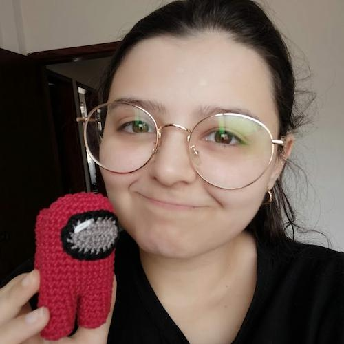

Sobre
Meu nome é Olivia Rodrigues, tenho 27 anos e moro no interior de Minas Gerais. Sou apaixonada por trabalhos manuais e um dos meus hobbies favoritos é fazer os meus bonequinhos de crochê (vulgo, amigurumis).
Este site é uma junção do meu amor por confeccionar amigurumis e meu objetivo de me transformar em uma desenvolvedora full-stack.